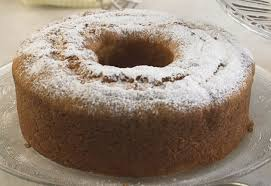
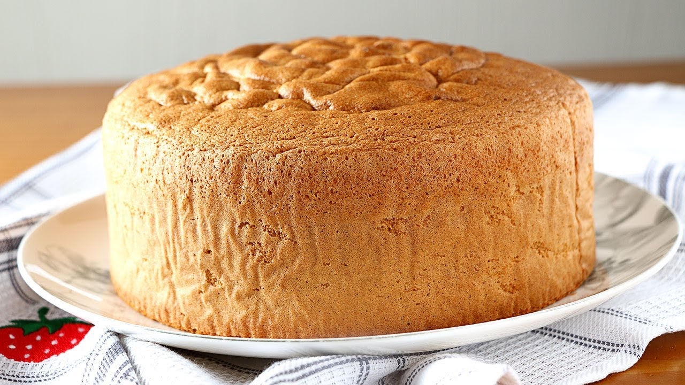
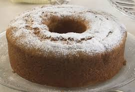
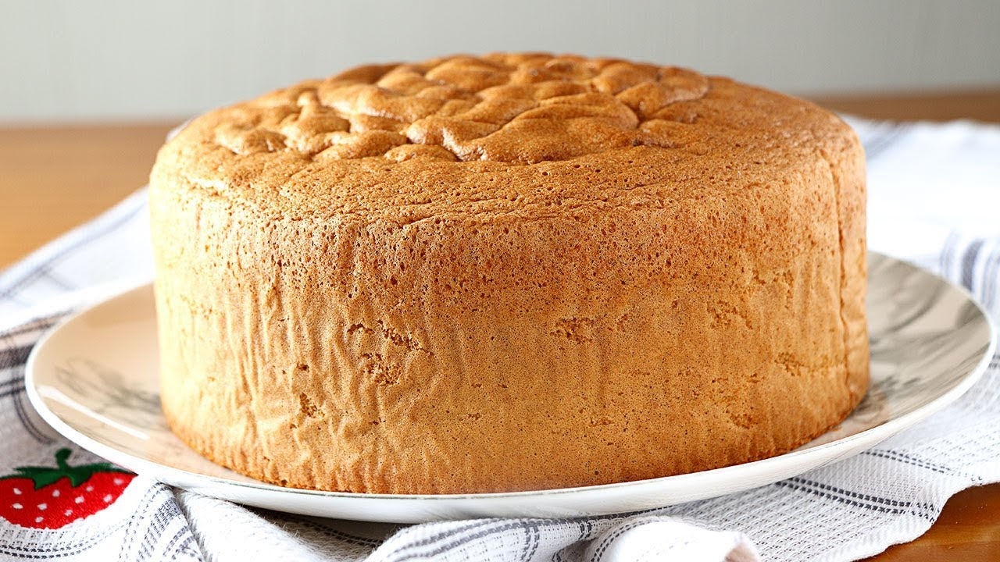

Receta de Bizcochuelo
En esta ocasión les traemos cómo preparar un bizcochuelo elaborado, independientemente de la marca que sea.
Ingredientes:
Bizcochuelo en Polvo - Puedes conseguirlo aquí
Huevos - Puedes conseguirlo aquí
Leche - Puedes conseguirla aquí
Manteca - Puedes conseguirla aquí
Harina - Puedes conseguirla aquí
Azúcar impalpable - Puedes conseguirla aquí


Proceso de Elaboración:
En un bols, romper dos huevos, y luego batirlos, ya sea con una batidora o tenedor, hasta que tenga un aspecto líquido
Tomar el sachet/ envase en el que se encuentre el bizcochuelo, y vertirlo en el bols.
Ir mezclando dentro del bols la preparación y agregar hasta un total de 20 cucharadas de leche progresivamente, hasta que la mezcla tenga un aspecto líquido
Tomar un molde, enmantecarlo internamente y agregarle una pizca de harina alrededor.
Verit el preparado en el molde, y meterlo en el horno a aproximadamente 180 grados por 50-55 minutos.
Una vez terminado el tiempo de cocción, sacar el bizcochuelo del horno, y por último, agregarle azúcar impalpable a gusto.
Resultado:
Finalmente, tendrás tu Bizcochuelo listo para disfrutar. Aquí hay algunas fotos sobre cómo podría lucir la receta una vez finalizada la elaboración:
 


